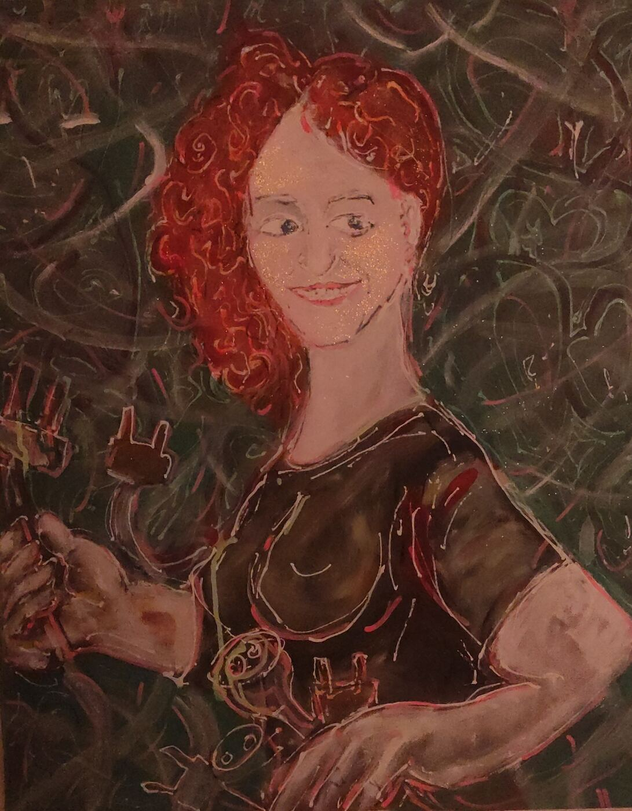
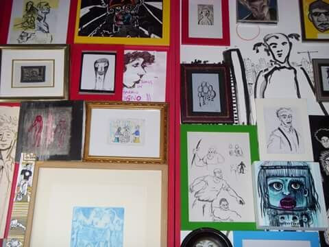

Pintura · Escultura · Performance
Un suave recuerdo lleno de color
Amantes, cuerpos al sol, noches de música y pan de oro. La obra de David Mirás desde su taller en Barcelona.
Ver la obra

La obra




De noche
Música, luz y movimiento
Sus retratos digitales nacen con el dedo sobre el móvil y se exponen en cajas de luz. Aquí se ven trazo a trazo.



El taller
Miras al otro lado
Su espacio de producción en Barcelona: exposiciones, talleres de pintura, dibujo y escultura, ilustraciones y performances.
Aquí nació «Ocaña en tránsito»: 320 cm de grafito tallado a mano en homenaje al pintor Ocaña.
Apúntate a un tallerÉl entrega sus espejos al mundo para que los demás vean en ellos su propia realidad.
Tom Puey · coleccionista e historiador
Exposiciones
- Colectiva yo · tú · nosotros · ellas Inusual Project, Barcelona
- Performance Mutabilidad Sala Freedonia, Barcelona
- Colectiva Testimoni del conflicte Poble Vell, Corbera d’Ebre
- Taller propio Miras al otro lado Barcelona
Hablemos
Encargos, compra de obra, exposiciones y talleres.
© 2026 David Mirás · Barcelona · Instagram [@USUARIO]Aviso legal · Privacidad